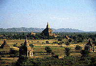
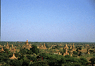
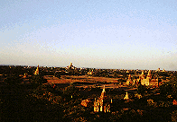
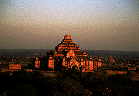
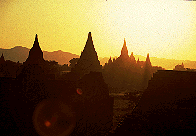
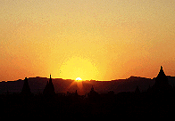
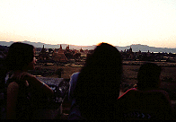

バガン
Bagan
「珍寺天国ミャンマーパゴダ列伝」、最後に紹介するのはミャンマー観光のハイライト、世界仏教三大遺跡のバガンのパゴダ群である。
観光客も多く、ミャンマーでは珍しいタチの悪い物売りなどがいるあたり、さすが世界仏教三大遺跡である。
しかし2000からあるというパゴダ群の眺めは壮観である。
 
ここでは敢えて個々のパゴダの紹介は省略する。
何といってもここの最大の見どころはこの眺めだからである。
 
日も暮れて参りました。
パゴダが紅く染まります。

幻想的な風景である。
いよいよ日が沈む。

旅の最後にふさわしい眺めである。
ミャンマーの旅もこれにておひらき。
それでは皆さんさようなら。

・・・って、そこの3人組！カメラの前に立つんじゃねえ！
それから隣の白人！ちゃんと靴脱げ！
おしまい
追記と謝辞とリンク集
ミャンマーパゴダ列伝のページへ
珍寺大道場 HOME